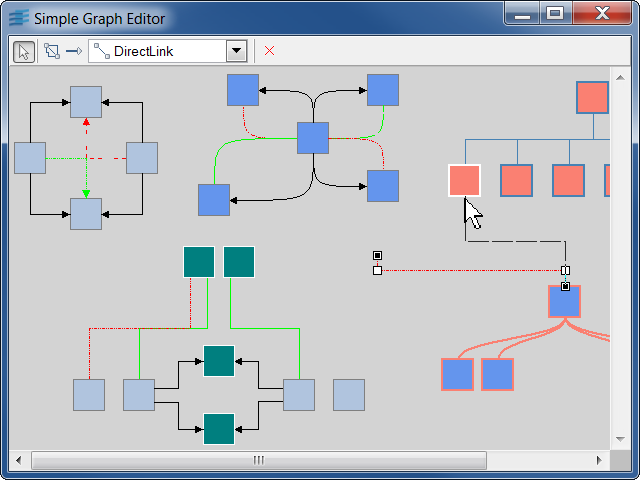

graphedThis sample shows how to create a small grapher editor.
This sample shows how to use the predefined interactors of the grapher library to build a small editor. The GUI of this sample uses a toolbar that enables to switch between several editing modes:
IlvGraphSelectInteractor class. IlvMakeLinkInteractor
class. The type of link created by the interactor is
specified by a factory. This factory is a subclass of
IlvMakeLinkInteractorFactory
that creates a copy of a link model. You can use the
combo box to choose the link model that must be used.
The toggle in the toolbar lets you
specify whether created links are oriented.IlvPinEditorInteractor class and lets
you interactively edit the connection pins of a node. IlvGrapherIlvMakeLinkInteractorIlvMakeLinkInteractorFactoryIlvPinEditorInteractorIlvGraphSelectInteractor